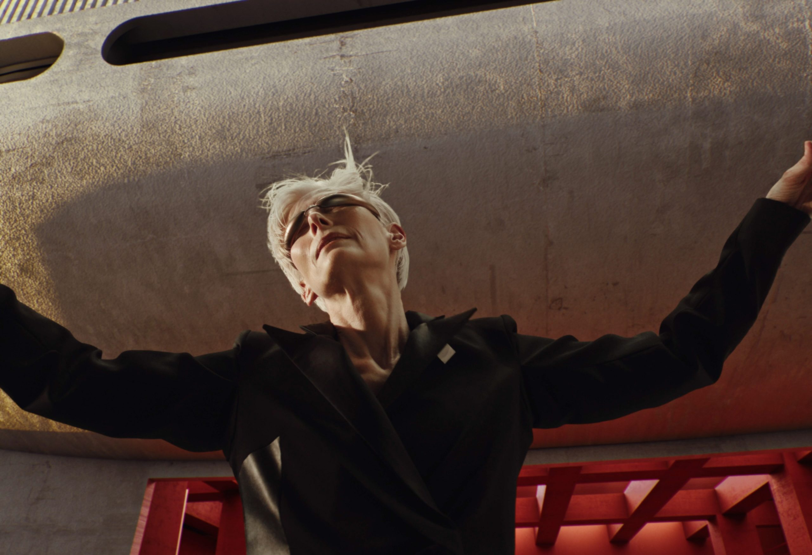
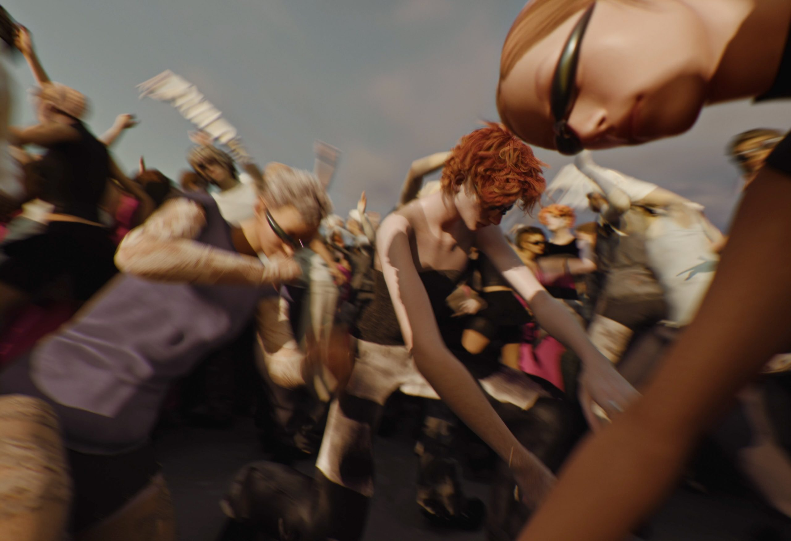
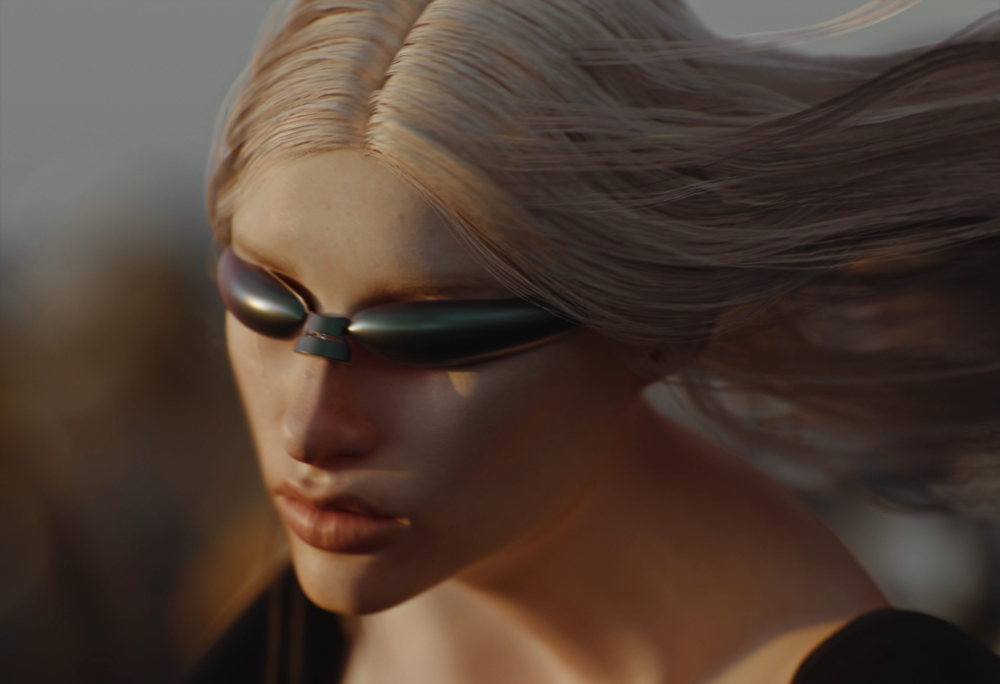
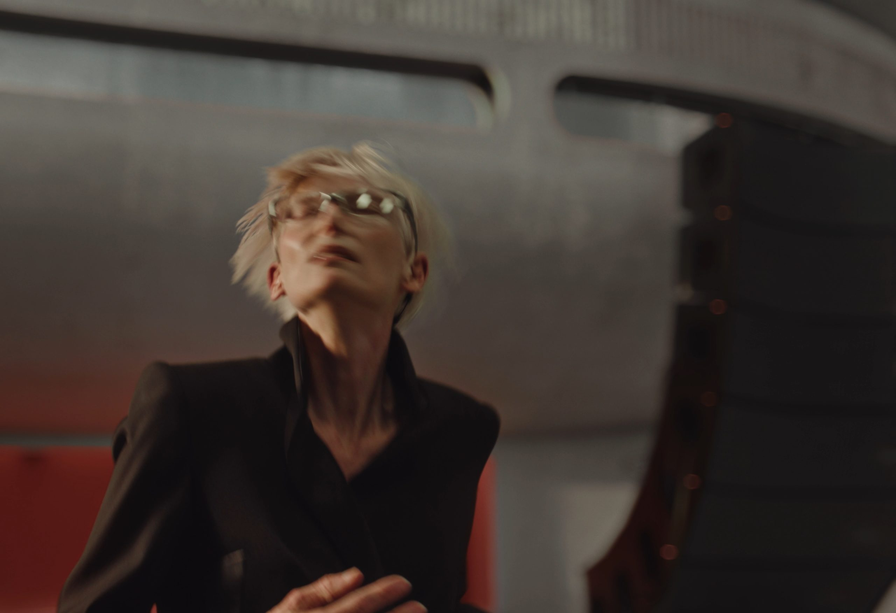
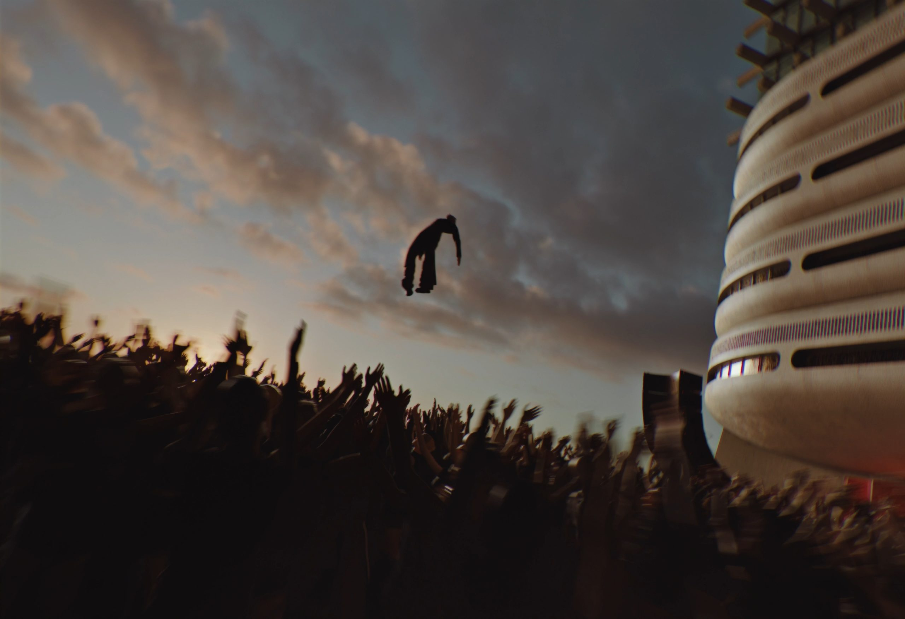

gentle monster bold
client: gentle monster
starring: tilda swinton
music: amnesia scanner
creative direction: gentle monster
director: mau morgó
dop: mauro chiarello
production company: prodco
post house: olimpic
ep: sira mollá
vfx creative director: cesar rodrez
vfx supervisor & cg lead: alex luque garcia
coordinator: lucia serrano
character design: noha manfredi
costume designer: valeria baret
lead animator: nacho conesa
compositors: juan manuel reyes, nacho hoyos
cg: alex luque garcia, daniel benza, javier polo, telmo garai, quim gonzalez
mocap choreo & perf: marvalyra, pecado carnal




